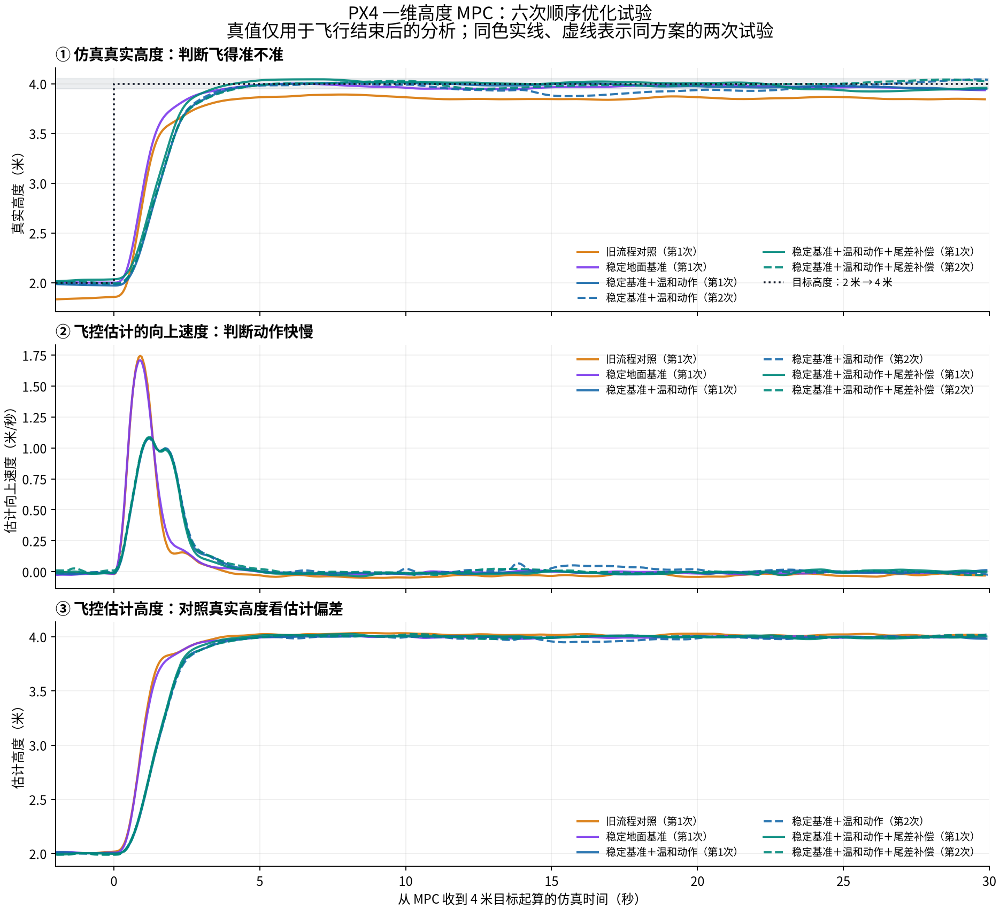

PX4 四旋翼一维高度 MPC：建模、约束与仿真实验
成果归档 · 2026-10-27 · Gazebo X500 · 高度从 2 米升至 4 米
最终结论
本实验在 PX4 SITL 与 Gazebo X500 上实现外部高度 MPC，完成模型标定、固定周期调度、地面基准稳定检查和动作约束优化，并通过六次顺序试验评价响应。
末段真实高度平均绝对误差：约 15.4 厘米 → 4.4 厘米
真实峰值速度：约 1.74 → 1.06 米/秒
左侧是旧 MPC 流程一次试验，右侧是最终方案两次试验的均值。动作更平缓，代价是上升变慢。尾差补偿试验没有表现出稳定收益，最终默认关闭。这里比较的是 MPC 工作流程优化前后，不能据此得出 MPC 全面优于 PID。
仍有估计偏差和试次波动。最终方案只有两次重复，其中一次未达到“进入 ±5 厘米后在剩余观察窗口内持续保持”的条件。当前结果构成可复查的仿真实验证据，尚未完成实机、多工况和工业级可靠性验证。
六次试验的证据
高度误差和峰值速度均来自仿真真值；真值只用于飞行结束后的评价，从未反馈给控制器。末段误差是末段平均高度相对 4 米的绝对偏差，不能当成整段最大误差。
| 方案 | 末段误差 / 厘米 | 峰值速度 / 米每秒 | 超调 / 厘米 | 持续进入 ±5厘米 |
|---|
| 1：旧流程 | 15.37 | 1.742 | 0.00 | 否 |
| 2：稳定地面基准 | 5.87 | 1.696 | 0.10 | 否 |
| 3：稳定基准＋温和动作 | 5.30 | 1.068 | 1.45 | 否 |
| 4：稳定基准＋温和动作 | 3.55 | 1.057 | 4.35 | 是 |
| 5：稳定基准＋温和动作＋尾差补偿 | 5.13 | 1.089 | 4.44 | 否 |
| 6：稳定基准＋温和动作＋尾差补偿 | 3.76 | 1.052 | 4.22 | 是 |
完整指标与每次试验目录 · 已完成的验证记录

第一幅看真实高度；第二幅看飞控估计的上升速度；第三幅看飞控估计高度。第一幅与第三幅的差距体现状态估计偏差。同色实线和虚线是两次重复试验。灰带是目标 ±5 厘米。
下载对比图 PDF
MPC 实现与飞控接口
scripts/altitude_mpc.py 只有 136 行，是核心。AltitudeMPC 从第 36 行开始；重点读第 89 行的 solve(height, velocity, target)，它接收高度、速度和目标，返回当前应执行的第一步加速度。
| 实现模块 | 位置 | 解决的问题 |
|---|
| 1. 建模 | altitude_mpc.py:47 | 用高度、速度两个状态预测未来运动 |
| 2. 展开未来轨迹 | altitude_mpc.py:55 | 将未来 30 步写成矩阵 |
| 3. 代价函数 | altitude_mpc.py:64 | 兼顾接近目标、速度小、控制输入小、指令平滑和末端状态 |
| 4. 约束 | altitude_mpc.py:75 | 限制输入加速度、输入变化和预测速度 |
| 5. 每次求解 | altitude_mpc.py:89 | 更新状态和目标，调用 OSQP，检查结果，取第一步 |
| 6. 接入飞控 | run_experiment.py:119 | 调用 solve，将向上加速度转换为 NED 向下坐标的 az 后发送给 PX4 |
| 7. 最终参数 | run_experiment.py:409、417 | 读标定模型，覆盖为 gentle 温和参数 |
| 8. 配套优化 | control_clock.py、flight_quality.py | 固定仿真时钟调度、地面稳定检查和可选尾差补偿 |
本实验在 PX4 外实现 Python MPC。它在高度变化阶段替代垂直位置与速度控制，PX4 继续执行加速度到推力、姿态、角速度及电机控制，并负责起飞和降落。横向位置与航向仍由 PX4 保持。PX4 参数名中的 MPC_ 指多旋翼位置控制，不代表这些参数属于模型预测控制。
模型与最终参数
状态：x = [高度 h, 向上速度 v]；输入：请求的净向上加速度 u
模型：a = K·u + b
h_next = h + dt·v + 0.5·dt²·(K·u+b)
v_next = v + dt·(K·u+b)
K = 1.5492651348831779；b = 0.041089602835091
每 0.1 秒求解一次，预测 30 步（未来 3 秒），每次仅执行第一步。
这是高度的二阶运动学模型，有两个状态。标定参数见 calibrated-altitude-model.json。
- 最终 gentle：预测速度软限制 1 米/秒；请求加速度硬限制 ±0.8 米/秒²；相邻请求变化按 2 米/秒³ × 0.1 秒约束。
- 速度软约束允许付出惩罚后超出；模型误差、时序和执行器动态也会影响实际运动，所以这些数值不保证实际飞行严格不越界。
- 代价权重：高度 12、速度 3、输入 0.2、输入变化 0.8、速度松弛 1000；末端使用离散 LQR 代价。
- 起飞前至少等 40 秒仿真时间，并检查最近 10 秒地面高度与速度稳定，再连续通过 3 秒检查。使用末段地面观测中位数建立高度基准；超时拒绝起飞。
- 尾差补偿可选 integral，本次默认 off。它是慢速、限幅的参考修正，不是完整的无静差 MPC，不能修正飞控自身的高度估计偏差。
注意：MPCConfig() 类本身保留 standard 参数及未标定模型。复现最终效果请使用下面完整入口，由实验脚本加载标定模型并覆盖 gentle 参数；单独实例化默认类不会自动得到最终配置。
如何复跑
Mac 仓库根目录（先启动并登录已配置好的 UTM Ubuntu，通过 PX4_LAB_VM 环境变量指定 SSH 目标）：
bash scripts/run-on-vm.sh gazebo mpc calibrated scheduled settled gentle off
或在已配置的 Ubuntu 虚拟机中：
bash ~/px4-altitude-lab/scripts/run-gazebo.sh --controller mpc --mpc-model calibrated --timing-mode scheduled --ground-init settled --motion-profile gentle --bias-compensation off
命令会重建本项目仿真世界，执行起飞、2→4 米高度变化与降落，生成新的日志和图表。环境为 Ubuntu 24.04 ARM64、PX4 v1.17.0、Gazebo Harmonic 8.15；GUI 使用已有的软件渲染配置。
只重新生成本成果包，不飞行：python3 scripts/package_results.py。重新生成中文图需要已安装数值分析依赖和中文字体的环境：python scripts/render_final_chart_zh.py。
成果清单与复查入口
轻量成果包包含核心及配套代码、配置、说明、中文图、最终六次试验的分析 CSV/JSON 和代码快照。它不包含 PX4 源码 vendor、Python 虚拟环境、UTM 磁盘、原始 ULog、运行缓存或控制台日志，不能当作完整环境备份。原始日志保留在原项目中。部分历史文档链接指向未打包的早期试验资料，请在原项目中查阅。